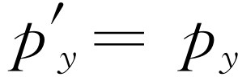

第17章 时空
§17-1 时空几何学
相对论告诉我们在两个不同的坐标系里测得的位置和时间的关系与我们根据直观概念所想象的不一样。透彻理解洛伦兹变换所包含的空间和时间的关系是十分重要的，因此，在本章中我们将较为深入地研究这个问题。
“静止”的观察者测得的位置和时间（x ，y ，z ，t ）和在以速度u “运动”的宇宙飞船里的观察者所测得的相应的坐标和时间（x ′，y ′，z ′，t ′）之间的洛伦兹变换为
我们来比较一下这些式子和式（11.5）。式（11.5）也涉及在两个坐标系中的测量关系，不过在那里一个坐标系相对于另一个坐标系作转动
在此特例中，莫和乔用的坐标轴中的x -轴和x ′-轴之间有一夹角θ 。在上述各种情况中，我们看到带撇的量是不带撇的量“混合”：新的x ′是x 和y 的混合，新的y′ 也是x 和y 的混合。
打一个比方来说：当我们观察一个物体时，有一个我们称之为“视宽度”和另一个我们称之为“深度”的概念。但是，宽度和深度这两个概念不是物体的基本 特性，因为如果我们走开一点，从不同的角度来观察同一物体，就得到不同的宽度和深度，并且我们可以建立一些从旧的量和有关角度来计算新的量的公式。式（17.2）就是这样的一些公式。人们可以认为一个给定的深度是所有宽度和所有深度的一种混合。假如物体是永远不能移动的，而且我们总是从同一位置来观察一个给定物体，这时情况就完全不同了——我们将总是看到“真实”的宽度和“真实”的深度，它们好像具有完全不同的性质，因为一个表现为视张角，而另一个与眼睛的聚焦或直觉有关；它们好像是非常不同的两件事，而且永远不会混合。但是，由于我们能够从不同的角度进行观察，所以我们认识到深度和宽度从某种意义上来说，正好是同一事物的两个不同方面。
我们能否用同样的方式来看待洛伦兹变换呢 ？这里也有一个位置和时间的混合。空间量度和时间量度之间的差值产生了一个新的空间量度。换句话说，某人的空间量度，在另一个人看来，却掺入了一些时间的量度。上述比方使我们产生这样的概念：我们所观察的客体的“实际”（粗略地、直观地说）总是比它的“宽度”和“深度”更为重要，因为“宽度”和“深度”与我们如 何 观察物体有关；当我们移动到一个新的位置时，我们可以立即重新算出它的宽度和深度。但是，当我们以高速运动时，不能立即重新算出坐标和时间，因为我们还没有以接近光速运动的实际经验，来鉴别时间和空间也具有相同的性质。这就像我们只能总是固定在一定的位置上来看某一物体的宽度，而不能这样或那样明显地移动我们的位置；如果我们能够的话，那么按照现在的理解，我们就应当能够看到一些别人的时间——比方说“滞后的”，即便是一点点。
因此，就像物体在普通的空间世界里是实在的，并能从不同的方向上被观察到一样，我们将试图在一种空间和时间混合在一起的新的世界里来想象客体。我们将认为，占有空间并延续了某一时间间隔的物体在新的世界里占有一个“小块”，而当我们以不同的速度运动时，我们就能从不同的角度观察到这个“小块”。这个新的世界是这样的几何实体，其中每一小块都占有位置并包含一定量的时间。我们称这个新的世界为时空 。在时空中的一个给定点（x ，y ，z ，t ）称为一个事件 。例如，可以设想，在水平方向作x 轴，在另外两个方向作y 和z 轴，其中两两互成“直角”，并且“垂直”于纸面（！），在竖直方向上作时间轴。那么一个运动粒子在这个图中会是什么样子呢？如果粒子是静止的，它具有某一x 值；随着时间的推移，它具有的x 值不变，因此，它的“轨迹”是平行于t 轴的一条直线［见图17-1（a）］。另一方面，如果它向前漂移，则随着时间的推移，x 将增大［图17-1（b）］。如果有一个粒子，开始时向外漂移，以后又逐渐地缓慢下来，那么它具有的运动就像图17-1（c）所示的那样。换句话说，一个永久的不蜕变的粒子在时空中用一条线表示。一个蜕变的粒子要用一条分叉线来表示，因为它在分叉点处开始变成两个粒子。
光的情况怎样呢？光是以速度c 运动的，因而应该用具有一定斜率的直线来表示［图17-1（d）］。
现在按照我们的新概念，假如一个粒子发生了某一给定事件，比如说，它在某一时空点突然蜕变成两个新粒子，并沿某些新的轨迹运动，而且这一有趣事件是发生在某一确定的x 和t 值处，那么我们或许会预期，如果这是有意义的话，只要取一对新的轴，并把它们转过一个角度，在这个新的系统里，我们将得到新的t 和新的x ，如图17-2（a）所示。但是，这是错误的，因为式（17.1）和（17.2）并不是完全 相同的数学变换。例如，两者之间的符号就不一样，事实上一个是用cos θ 和sin θ 项来表示，而另一个是一些代数量（当然，把代数量写成余弦和正弦的形式并不是不可能的，但实际上却不能这样做）。尽管如此，这两种表示式还是很相似的。我们将会看到，由于符号的不同，把空-时看成是一个实在的普通几何空间确实是不可能的。实际上，虽然我们不强调这一点，但可以证明，一个正在运动的人必须选用一组与光线成相同倾角的坐标轴，它的x′ 和t′ 如图17-2（b）所示，须用平行于x ′轴与t ′轴的一种特殊投影得出。我们将不讨论这种几何，因为它用处不大，而用方程式来研究则更容易一些。
§17-2 时空间隔
虽然时空几何不是通常意义下的欧几里得几何，但是存在 一种与欧氏几何非常相似的几何学，不过它在某些方面有其特殊之处。如果这种几何概念是正确的，就应存在一些与坐标系无关的坐标和时间的函数。例如，通常在转动时，如果取两点，为了简单起见，一点取在原点，另一点取在任何地方，两个系统具有同一原点，则从一点到另一点的距离在这两个系统中是相同的。这一性质与测量距离的特定方法无关。距离的平方是x 2 +y 2 +z 2 。那么，时空的几何情况如何呢？不难证明，这里也有一个量是不变的，即在变换前后组合c 2 t 2 -x 2 -y 2 -z 2 不变
因此就某种意义来说，这个量像距离一样，是“实在”的。我们把它称为两个时空点之间的间隔 ，在此例中，一个时空点取在原点（当然，实际上它是间隔的平方，就像x 2 +y 2 +z 2 是距离的平方一样）。由于是在不同的几何学中，所以我们给它起了个不同的名称，但值得注意的只是式中有几个符号相反，而且其中含有一个因子c 。
让我们把c 去掉；如果我们找到一个x 和y 可以互换的奇妙空间，那似乎是荒唐的。没有经验的人可能会引起的混淆之一是，比方说，用眼睛的张角测量宽度，而用另一种方法，如用聚焦时眼肌肉的紧张程度来测量深度，从而以英尺计量深度，以公尺计量宽度。这样，人们在做像式（17.2）这类变换时，会感到方程式极为复杂，并且由于用了两种不同的单位去计量同一事物这样一个非常简单的技巧上的原因，使人们不能看到事物的鲜明性和简易性。现在方程式（17.1）和（17.3）的性质告诉我们，时间和空间是等价的；时间变成了空间；它们应该用相同的单位计量 。什么是1 s的距离？从式（17.3）很容易算出1 s的距离是3×108 m，也就是光在1 s内所走过的距离 。换句话说，如果我们用同一单位，如秒，来计量所有的距离和时间，则距离的单位就是3×108 m，这样，方程式就比较简单了。使单位一致起来的另一个办法是用米来计量时间。什么是1 m的时间呢？1 m的时间就是光走过1 m所用的时间，也就是1/3×10-8 s，或者是1 s的十亿分之三点三！换句话说，我们希望用c =1的单位系统来写出所有的方程式。如果时间和空间真如我们设想的那样用同一单位来计量，那么方程式就会明显地大为简化。它们是
 （17.5）
（17.5）
如果在采用c =1的单位系统后，我们担心或害怕再也不能使这些方程式成立，答案完全相反。这些没有c 的方程式更容易记，并且通过考虑量纲，很容易把c 又放回去。例如，在 中，我们知道不可能从纯粹的数目中减去一个有单位的速度平方，因此，必须用c 2 去除u 2 以保证它没有单位。这就是我们采用的办法。
时空空间和普通空间之间的区别，以及与距离相应的间隔的特性是很有趣的。按照式（17.5），如果我们考虑在一给定坐标系中时间为零，只有空间的一个点，则它的间隔平方为负值，于是我们就得到一个虚的间隔，即一个负数的平方根。在相对论中，间隔可以是实数，也可以是虚数。间隔的平方可以是正的，也可以是负的，不像距离只有正的平方值。当间隔为虚数时，我们说这两点之间有一个类空间隔 （而不说虚数），因为这个间隔比较更像空间而不像时间。另一方面，如果两个物体在一给定坐标系中的同一地方，仅是时间不同，这时时间的平方是正的，距离为零，间隔的平方为正值；这个间隔称为类时间隔 。因此，在时空图中，应有某种类似于这样的表示：在45°角处，有两条线（实际上，在四维空间中，这些线构成“圆锥”，称为光锥），这些线上的点与原点的间隔均为零。正如在式（17.5）中看到的那样，从某一给定点出发的光线，与原来出发点之间的间隔总是零。顺便说一下，我们刚才已经证明了若光在一个坐标系中以速度c 传播，它在另一个坐标系中也将以速度c 传播，因为，如果间隔在两个坐标系中是相同的，亦即，在一个坐标系中的间隔为零，在另一个坐标系中的间隔也为零，那么，光的传播速度不变的说法与间隔为零的说法是相同的。
§17-3 过去，现在和将来
如图17-3所示，在一给定时空点周围的时空区可以分成三个区域。在一个区域内具有类空间隔，在另两个区域内具有类时间隔。从物理意义上来看，由一给定点周围的时空分成的这三个区域与该点有一种有趣的物理联系：一个物理客体或信号可以低于光速的速率从区域2的一点到达事件O 处。因此，在此区域里的事件能够影响O 点，也能从过去来影响它。当然事实上，在负t 轴上P 点处的客体相对于O 点正处在“过去”，它与O 是同样的空间点，只是较早而已。在那里那时发生过的事件，现在正影响着O （遗憾的是，生活正是如此）。在Q 点处的另一个客体能以低于c 的某一速率运动到O 点，因而如果这是正在运动着的宇宙飞船中的物体，它也会是同一空间点的过去。也就是说，在另一坐标系中，时间轴可以同时通过O 和Q 两点。因此，在区域2内的所有点都是处在O 点的“过去”，在此区域内发生的任何事件都能影响 O 点。所以区域2有时称为可感知的过去 或有影响的过去 ；所有能以任何方式影响O 点的事件都位于这个区域。
另一方面，区域3是受O点影响的一个区域，在这个区域中，以低于光速c 的速率射出的“子弹”能够“击中”物体。因此，在这个世界里，我们能影响它的未来，所以我们称它为可感知的未来 或有影响的未来 。现在，时空剩下的部分就是区域1，关于这个区域令人感兴趣的是，我们既不能从现在的O 点影响它，它也不能影响我们现在的O 点，因为没有任何东西能跑得比光速更快。当然，在R 处发生的事件还是能在较晚 的时候影响我们的；比如说，如果太阳“此刻”正在爆炸，我们得在八分钟以后才能知道，在这之前，它不可能对我们有所影响。
我们所说的“此刻”是一个很神秘的东西，我们既不能对它加以定义，也不能对它施加影响，但它却能在较晚的时候影响我们，或者如果我们在足够遥远的过去完成某些事情，我们已经能影响它了。当我们观察半人马座α 星时，看到的是四年以前的它；我们也许想知道它“现在”是什么样子。“现在”意味着，从我们这个特定的坐标系来看是在同一时刻的意思。我们只能从我们的过去，即四年前，从半人马座α 星发出的光线来看它，而并不知道它的“现在”，它“现在”发生的情况要能影响到我们，那已经是四年以后了。半人马座α 星的“现在”仅是我们头脑中的一个概念或想象，它并不是此刻在物理上真正可以定义的，因为我们必须等待着去观察它；我们甚至不能就在“现在”定义它。还有“现在”是取决于坐标系的。例如，假定半人马座α 星在运动，它上面的观察者将和我们的看法不同，因为他必须使他的坐标轴处在某一个角度，他的“现在”应是另一个 时间。我们已经讲过，同时性并不是唯一的。
有些江湖术士、占卜算命之流告诉我们，他们能知道未来，而且还杜撰了许多某人突然发现他有预知未来的本领等荒诞无稽的故事。显然，此中充满了很多似是而非的悖理，因为如果我们知道将发生什么事，那么，我们就肯定能够在适当时间采取适当措施来避免它，等等。但是，实际上甚至没有任何一个占卜算命之流能告诉我们现在 ！没有任何一个人能够告诉我们在任何适当的距离刚好在现在正在发生什么事情，因为那是不能观察的。我们可以向自己提出这样一个问题，我们把它留给同学们去试作回答：如果在区域1的类空间隔中发生的事情突然变为可知的，那么将会产生什么样的佯谬？
§17-4 四维矢量的进一步讨论
现在我们再回过来讨论洛伦兹变换和空间轴转动的类比。我们已经知道了把一群与坐标具有同样变换性质的其他量合在一起，以构成我们称之为矢量 的有向线段的用处。在通常的转动情况下，有很多量的变换方式与在转动情况下的x ，y 和z 的变换方式一样，例如，速度有三个分量，即x ，y 和z 分量；当在另一个坐标系观察时，这些分量没有一个保持相同，它们都变换成新的值。但是，不管怎样，速度“本身”要比它的特殊分量具有更大的实在性，我们用一根有向线段来表示它。
因此，我们要问：是否也存在着这样一些量，它们在运动坐标系和静止坐标系中的变换方式，或者它们之间的相互关系与x ，y ，z 和t 相同？从我们关于矢量的经验，我们知道，其中的三个量类似于x ，y ，z 将构成一个普通的空间矢量的三个分量，但是第四个量，在空间转动下看起来像一个普通的标量，因为只要我们不是处于运动坐标系中，它总是不变的。那么，是否可以把我们称之为“时间分量”的第四个量与某些我们已知的“三维矢量”以一定方式联系起来，而使这四个量一起按照在时空中的位置和时间同样的方式“转动”呢？我们现在将证明，的确存在着这样的一种情况（实际上有许多种这样的情况）：动量的三个分量和作为时间分量的能量一起变换 ，就构成一个所谓“四维矢量”。在论证这一点时，因为到处都带有c 书写起来很不方便，所以我们将采用在式（17.4）中用过的同样技巧来处理能量、质量和动量的单位。例如，能量和质量只相差一个因子c 2 ，这仅仅是单位的问题，所以我们可以说能量就是 质量。我们令E =m ，而不是写出c 2 。当然，在遇到麻烦时，我们可以把正确的c 代入，以便使单位在最后的方程式中得到纠正而直接出现，但在中间步骤中则略去c 。
因此，能量和动量的方程式可以写成
在这种单位中，有
例如，如果我们以电子伏（eV）来计量能量，那么1 eV的质量是什么意思呢？它是指静止能量为1 eV的质量，即m 0 c 2 是1eV。又如一个电子的静止质量为0.511×106 eV。
那么，动量和能量在新的坐标系中是什么样子呢？为了找出它们，我们就要对方程组（17.6）作一变换。我们之所以能这样做，是因为知道了速度是如何变换的。假设，我们在测量时，一个物体具有速度v ，但是，我们是从以速度v 运动的宇宙飞船上来观察这一物体的，所以我们把在宇宙飞船坐标系中测得的相应量都打上一撇。为了使问题简化起见，在开始时我们将研究速度v 和u 在同一方向的情况（以后我们可以研究更一般的情况）。那么在宇宙飞船上看到的速度v′ 是什么呢？这是一个合速度，即v 和u 之“差”。根据我们前面得出的定律
现在，我们来计算在宇宙飞船中的人看到的新的能量E ′。当然，他应该采用同样的静止质量，但是应该用v′ 作为速度。我们必须计算v′ 的平方，算出1-v ′2 的值，再将1-v ′2 开方并算出其倒数值
因此
能量E ′就是m 0 乘上式。但是，我们要求的是用不带撇的能量和动量来表示E ′，我们注意到
或
这个式子与下式
的形式完全一样。其次，我们必须找出新动量 。这正是能量E ′和v′ 的乘积，也可以简单地用E 和p 来表示，即
因此
此式又和下式
的形式完全一样。
由此可见，用原来的能量和动量来表示新的能量和动量的变换与用t 和x 来表示t′ 及用x 和t 来表示x ′的变换完全一样：我们需要做的是将式（17.4）中的t 换成E ，x 换成p x ，这样，式（17.4）就变得与式（17.10）和（17.11）完全相同。如果这一切都是完全正确的，就应该包含着另一条规则： 和 。要证明这一点，就需要我们回过头来研究上下运动的情况。实际上，在上一章中我们已经研究过上下运动的情况。我们分析过一个复杂的碰撞，并且注意到，事实上，从运动的坐标系来看，动量的横向分量是不变的；因此，我们就证明了 和 。而整个变换为
因此，在这些变换中，我们发现了四个和x ，y ，z 和t 的变换相同的量，我们称它为四维动量矢量 。既然动量是一个四维矢量，那么在运动质点的时空图上，可以用一个与轨道相切的箭头来表示，如图17-4所示。这个箭头的时间分量等于能量，空间分量代表它的三维动量矢量；这个箭头要比能量或者动量都更为“实在”，因为能量和动量与我们观察这个图的方式有关。
§17-5 四维矢量代数
四维矢量的表示法与三维矢量的表示法不同。在三维矢量中，我们用 p 表示通常的三维动量矢量，如果说得更明确一些，我们可以说对于所研究的坐标轴，它具有三个分量p x ，p y 和p z ，或者简单地用p i 来表示一般分量，i 既可以是x ，y ，也可以是z ，这样就得出了三个分量；也就是说，设想i 是x ，y 或z 三个方向中的任何一个。四维矢量的表示法与此类似；p μ 表示四维矢量， μ 代表四个 可能方向t ，x ，y 或z 中的任何一个。
当然，我们可以用我们所需要的任何符号；但不要轻视这些符号，要看到它们的出现是很有用的。实际上，数学在很大程度上就在于找出日益完善的符号。事实上，四维矢量的整个观念就在于改进符号的表示法，使得变换易于记住。A μ 是一个一般的四维矢量，但对动量这个特殊的例子来说，p t 被确定为能量，p x 是x 方向的动量，p y 是y 方向的动量，p z 是z 方向的动量。使四维矢量相加，也就是把它们的相应分量加起来。
如果有一个四维矢量的方程式，那么这个方程式对每一个分量 都是正确的。例如，如果在粒子碰撞中三维动量矢量的守恒定律是正确的，也就是说，如果大量相互作用或碰撞的粒子的动量之和是一个常数，那么，这就必然意味着，所有粒子在x ，y 和z 的每一个方向上的动量之和都应分别为常数。在相对论中，单独这条定律是不成立的，因为它不完全 ；这就像对一个三维矢量只讲它的两个分量一样。说它不完全是因为如果我们转动坐标轴，就把各个分量混合起来了，因而，在我们的定律中，必须包括所有的三个分量。同样，在相对论中，我们必须推广动量守恒定律使它包括时间 分量，以保持完整。把它和其他三个分量合在一起是绝对必要的 ，否则，就不可能有相对论不变性。能量守恒 是第四个方程式，它和动量守恒一起在时空几何中构成了一个正确的四维矢量关系式。这样，在四维表示方式中能量和动量守恒定律为
或写成一个稍微不同的表示形式
 （17.14）
（17.14）
这里i =1，2，…表示即将发生碰撞的粒子，j =1，2，…表示碰撞后离开的粒子，而 μ =x ，y ，z 或t 。也许你要问，“这是相对于什么坐标轴？”这没有关系，因为采用任何 坐标轴，这条定律对每一个分量都是适用的。
在矢量分析中，我们曾讨论过另一个问题，即两个矢量的点积。现在我们来考虑在时空中相应的情形。在一般的转动问题中，我们发现，有一个不变量x 2 +y 2 +z 2 。在四维问题中，我们发现相应的量是t 2 -x 2 -y 2 -z 2 （式17.3）。如何把它表示出来呢？一种方法是在两个矢量之间加一个中间带点的四边形，如 ；实际采用的一种表示法是
在∑上加一撇表示第一项，即“时间”项为正的，而其他三个项都带有负号。这样，在任何坐标系中这个量都一样，我们称它为四维矢量长度的平方。例如，一个质点的四维动量矢量长度平方是什么呢？它等于 ，或者换一种形式为E 2 -p 2 ，因为我们知道p t 就是E 。什么是E 2 -p 2 呢？它必须是在每一个坐标系中都不变的量。特别是，对于一个始终随着粒子一起运动的坐标系，即粒子在其中保持静止的坐标系，这个量应该保持不变。如果粒子是静止的，它就不会有动量。因此，在这种坐标系中，它只有纯粹的能量，并与它的静止质量相同。这就是说， 。由此可知，四维动量矢量长度的平方等于 。
从一个矢量的平方出发，我们可以进而定出“点积”，即它的乘积是一个标量的积：如果a μ 是一个四维矢量，b μ 是另一个四维矢量，则标积是
∑′a μ b μ =a t b t -a x b x -a y b y -a z b z .（17.16）
在所有坐标系中，它都是一样的。
最后，我们还要提一下某些静止质量m
0
为零的情形。例如，光子。光子就像一个粒子，带有一定的能量和动量。光子的能量是一个确定的常数（称为普朗克常数）乘以光子的频率：E
=hν
。这种光子也带有一定的动量，光子（实际上，任何粒子）的动量等于波长除以普朗克常数：p
=h/λ
。但是，对于光子来说，频率和波长之间有一个确定的关系：ν
=c
/λ
（每秒钟的波数乘上每个波的波长就是光在1 s内走过的距离，显然就是c
）。因此，我们立即可以看出，光子的能量一定是动量乘c
，或者，如果c
=1，能量和动量就相等
。这就是说，静止质量为零。让我们再来看一看，这是非常奇怪的。如果一个粒子的静止质量为零，当它停止时，会发生什么情况呢？它永远不会停止！
它总是以速度c
运动着。能量的一般公式是 。那么，我们能否说，因为m
0
=0，v
=1，所以能量也是零？我们不
能
说它等于零；尽管光子没有静止质量，它实际上能够（而且也确实）具有能量，不过这是因为它永远以光速运动才具有能量！
。那么，我们能否说，因为m
0
=0，v
=1，所以能量也是零？我们不
能
说它等于零；尽管光子没有静止质量，它实际上能够（而且也确实）具有能量，不过这是因为它永远以光速运动才具有能量！
我们还知道，任何粒子的动量都等于它的总能量乘它的速度：如果c =1，p =vE ，或者在通常单位中p =vE /c 2 。对于任何以光速运动的粒子来说，如果c =1，则p =E 。从运动坐标系来看，光子的能量公式显然是由式（17.12）给出，对于动量，我们应该用能量乘c 来代替（或在这种情况下乘以1）。经过变换后不同的能量意味着具有不同的频率。这叫做多普勒效应，用E =p 和E =hν ，我们就能很容易从式（17.12）算出它来。
正如闵可夫斯基所说的：“空间本身和时间本身将消失在完全的阴影之中，只有它们之间的某种结合才将得以生存。”